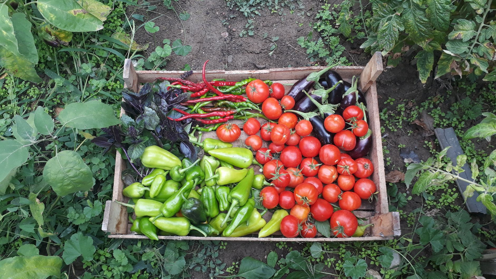
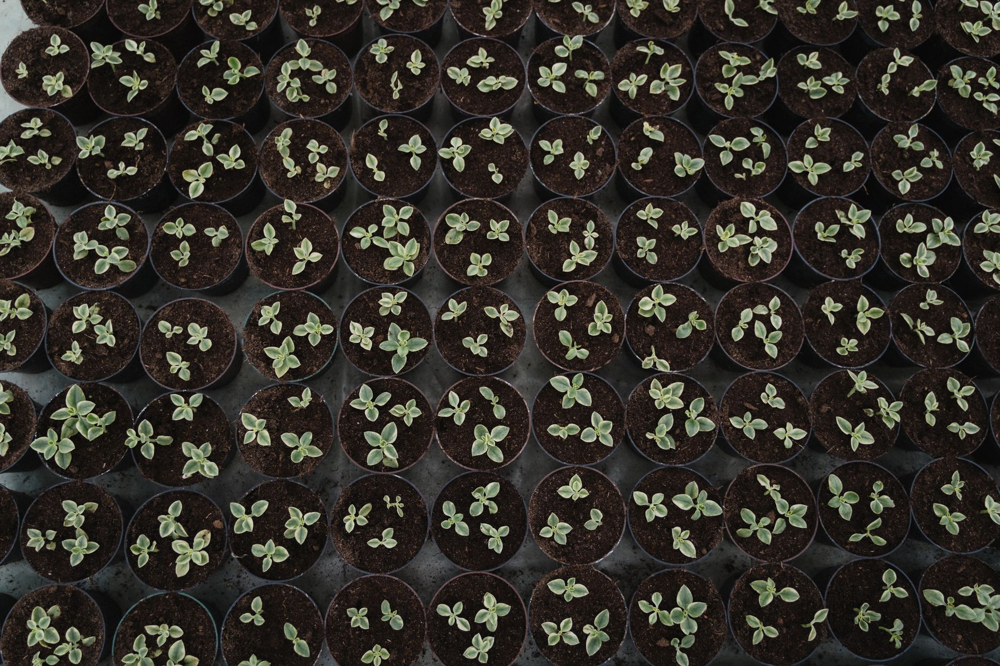
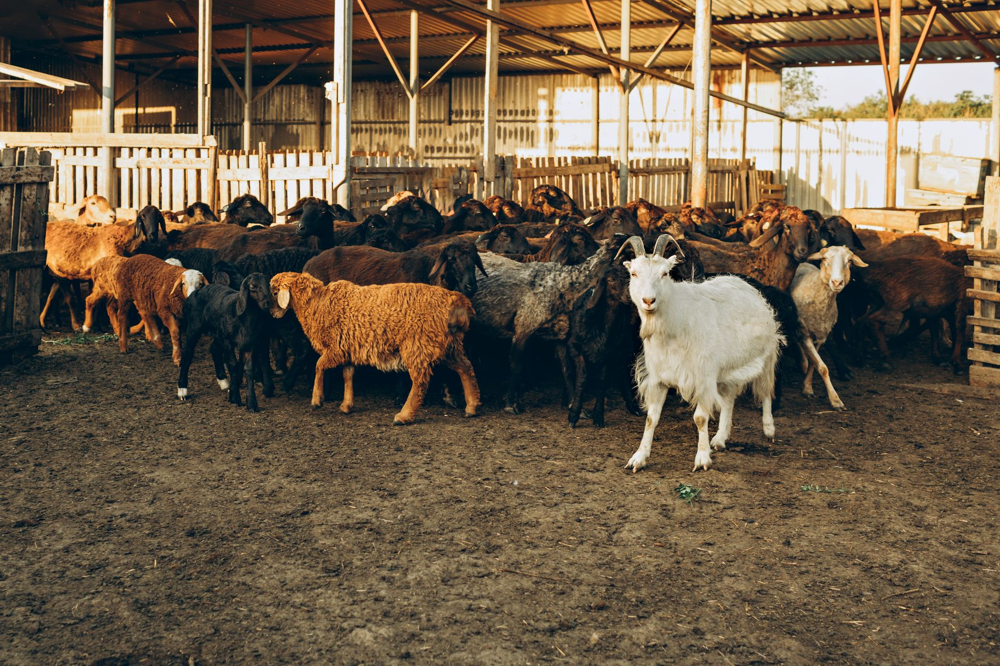

700 Lawlins Rd · Wyckoff
A working farm in Wyckoff with a market, greenhouse and petting zoo.
The kitchen
Abma's is a working farm on Lawlins Rd in Wyckoff, with a market, a greenhouse and a barnyard you can walk through.
The market carries fresh produce, honey and other farm goods to take home. Alongside it, the greenhouse stocks plants for the garden, and the barnyard gives visitors a chance to meet the animals that live on site.



Produce, plants and animals in one visit
Browse the market for seasonal produce and honey, pick up plants from the greenhouse, then head to the barnyard to see the animals.
| Monday | Closed |
|---|---|
| Tuesday | 08:00 – 18:00 |
| Wednesday | 08:00 – 18:00 |
| Thursday | 08:00 – 18:00 |
| Friday | 08:00 – 18:00 |
| Saturday | 08:00 – 17:30 |
| Sunday | Closed |